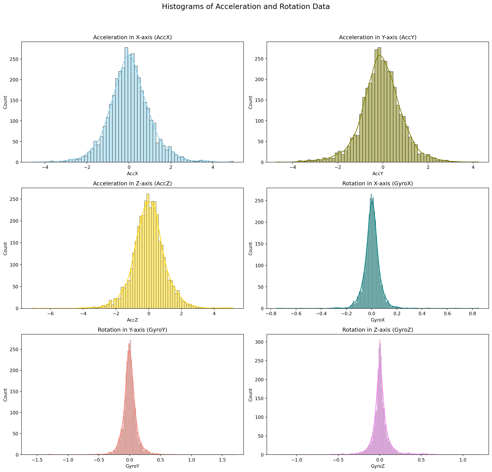
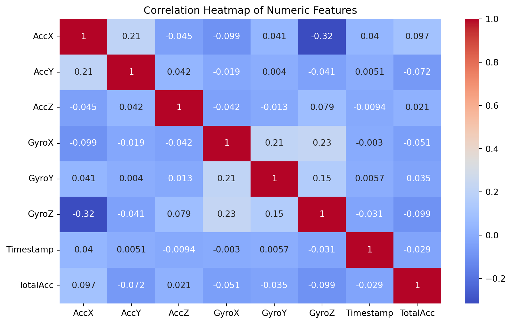

import pandas as pd
# Load the datasets
test_data = pd.read_csv('motion_data_1.csv')
train_data = pd.read_csv('motion_data_2.csv')
# Checking for missing values in both datasets
missing_values_test = test_data.isnull().sum()
missing_values_train = train_data.isnull().sum()Classification: Predictive Analytics for Driving Behavior Classification

Project Introduction
Welcome to our exploration into the world of machine learning and its application in predicting driving behaviors. In this project, we dive into the realm of vehicular safety, aiming to leverage sensor data to classify driving patterns into three categories: SLOW, NORMAL, and AGGRESSIVE. This endeavor is not just a technical challenge but a crucial step towards enhancing road safety and reducing traffic accidents.
Objective
The primary goal of this project is to accurately predict driving behaviors using data from commonly available sensors in smartphones. By analyzing accelerometer and gyroscope data, we aim to classify driving styles into SLOW, NORMAL, or AGGRESSIVE, contributing significantly to the prevention of road mishaps.
Importance and Applications
The importance of this project is underscored by the alarming statistics from the AAA Foundation for Traffic Safety, highlighting that over half of fatal crashes involve aggressive driving actions. Through this project, we offer a scalable and readily deployable solution to monitor and predict dangerous driving behaviors, potentially saving lives and making our roads safer. Applications of this model extend to insurance companies for risk assessment, ride-sharing services for driver monitoring, and personal safety apps to alert drivers of their driving patterns.
Data Collection and Description
Source of the Data
The dataset for this project is derived from a real-world scenario, specifically designed to capture driving behaviors. Utilizing a data collector application on Android devices, we have gathered sensor readings directly relevant to driving dynamics.
Dataset Description
The dataset is a rich collection of sensor data recorded from a Samsung Galaxy S21, chosen for its advanced sensor capabilities. Here’s a breakdown of the dataset features:
Acceleration Data
- Axes: X, Y, Z
- Unit: Meters per second squared (m/s²)
- Note: Gravitational acceleration has been filtered out to focus on the acceleration caused by driving actions.
Rotation Data
- Axes: X, Y, Z
- Unit: Degrees per second (°/s)
- Purpose: Captures the angular changes during driving, indicative of turns and maneuvers.
Classification Label
- Categories: SLOW, NORMAL, AGGRESSIVE
- Basis: The driving behavior classification based on the sensor data patterns.
Additional Information
- Sampling Rate: 2 samples per second, ensuring a fine-grained capture of driving dynamics.
- Timestamp: Included for each sample, allowing for temporal analysis of driving patterns.
In the following sections, we will delve into the preprocessing, exploratory analysis, and modeling of this dataset to build a robust classifier for driving behaviors. Stay tuned as we unravel the insights hidden within this data and develop a machine learning model with the potential to make a real-world impact.
Data Preprocessing
In the realm of machine learning, data preprocessing is a critical step in preparing raw data for modeling. Our datasets, motion_data_1.csv (test data) and motion_data_2.csv (train data), contain acceleration and rotation measurements alongside driving behavior classifications. Let’s walk through the preprocessing steps:
Handling Missing Values
First, we’ll check for missing values in both datasets. Missing data can significantly impact the performance of a machine learning model. If missing values are found, strategies such as imputation or removal of the affected rows can be considered.
Normalizing or Scaling the Data
Normalization or scaling is crucial when dealing with sensor data. It ensures that each feature contributes proportionately to the final prediction. Given the different scales of acceleration (in m/s²) and rotation (in °/s), applying a scaling method like Min-Max scaling or Standardization is important.
from sklearn.preprocessing import StandardScaler
# Standardizing the data
scaler = StandardScaler()
train_data_scaled = scaler.fit_transform(train_data.iloc[:, :-2]) # Excluding 'Class' and 'Timestamp' columns
test_data_scaled = scaler.transform(test_data.iloc[:, :-2])Feature Engineering
Feature engineering might involve creating new features or modifying existing ones to improve model performance. In our case, we might consider deriving features like the total magnitude of acceleration or rotation.
import numpy as np
# Adding a feature: Total magnitude of acceleration
train_data['TotalAcc'] = np.sqrt(train_data['AccX']**2 + train_data['AccY']**2 + train_data['AccZ']**2)
test_data['TotalAcc'] = np.sqrt(test_data['AccX']**2 + test_data['AccY']**2 + test_data['AccZ']**2)Exploratory Data Analysis (EDA)
Statistical Summary of the Dataset
Understanding the basic statistics of the dataset is essential. This includes measures like mean, median, standard deviation, etc., providing insights into the data distribution.
# Descriptive statistics of the training data
train_data_description = train_data.describe()Visualization of Data Distribution
Histograms or Box Plots for Acceleration and Rotation Data
Histograms and box plots are effective for visualizing the distribution of sensor data and identifying outliers or skewness in the data.
import matplotlib.pyplot as plt
import seaborn as sns
# Setting up the figure for multiple subplots
fig, axes = plt.subplots(nrows=3, ncols=2, figsize=(15, 15))
fig.suptitle('Histograms of Acceleration and Rotation Data', fontsize=16)
# Plotting histograms for each sensor data column
sns.histplot(train_data['AccX'], kde=True, ax=axes[0, 0], color='skyblue')
axes[0, 0].set_title('Acceleration in X-axis (AccX)')
sns.histplot(train_data['AccY'], kde=True, ax=axes[0, 1], color='olive')
axes[0, 1].set_title('Acceleration in Y-axis (AccY)')
sns.histplot(train_data['AccZ'], kde=True, ax=axes[1, 0], color='gold')
axes[1, 0].set_title('Acceleration in Z-axis (AccZ)')
sns.histplot(train_data['GyroX'], kde=True, ax=axes[1, 1], color='teal')
axes[1, 1].set_title('Rotation in X-axis (GyroX)')
sns.histplot(train_data['GyroY'], kde=True, ax=axes[2, 0], color='salmon')
axes[2, 0].set_title('Rotation in Y-axis (GyroY)')
sns.histplot(train_data['GyroZ'], kde=True, ax=axes[2, 1], color='violet')
axes[2, 1].set_title('Rotation in Z-axis (GyroZ)')
plt.tight_layout(rect=[0, 0.03, 1, 0.95])
plt.show()
Acceleration (AccX, AccY, AccZ): The distributions for acceleration on all three axes appear to be roughly bell-shaped, indicating that most of the readings are clustered around the mean, with fewer readings at the extreme ends. This suggests normal driving conditions with occasional variances that could indicate moments of acceleration or deceleration.
Rotation (GyroX, GyroY, GyroZ): The rotation data histograms show a similar bell-shaped distribution, especially for the X and Y axes, indicating consistent turning behavior with some outliers potentially representing more aggressive turns or corrections. The GyroZ histogram is notably narrower, which might suggest that rotation around the Z-axis (often corresponding to yaw movements) is less variable during normal driving conditions.
Correlation Heatmaps
A correlation heatmap helps in understanding the relationships between different sensor readings. It’s crucial for identifying features that are highly correlated and might need to be addressed during feature selection.
# For the correlation heatmap, we need to exclude non-numeric columns (Class and Timestamp)
train_data_numeric = train_data.select_dtypes(include=['float64', 'int64'])
# Generating the correlation heatmap
plt.figure(figsize=(10, 6))
sns.heatmap(train_data_numeric.corr(), annot=True, cmap='coolwarm')
plt.title('Correlation Heatmap of Numeric Features')
plt.show()
In this heatmap:
- Values close to 1 or -1 indicate a strong positive or negative correlation, respectively.
- Values close to 0 suggest no linear correlation between the variables.
It appears that:
- There are no exceptionally strong correlations between the different axes of acceleration and rotation, which is desirable in a dataset used for behavior prediction as it indicates that the sensor readings provide unique information.
- The strongest negative correlation is observed between GyroZ and AccX, which might suggest that certain types of aggressive driving behaviors cause inverse changes in these two measurements.
The absence of very high correlations means that there may not be redundant features in the dataset, which is good for a machine learning model that relies on diverse data points to make predictions. However, the subtle correlations that do exist can still provide valuable insights when developing features and training models.
These visualizations and their interpretations are key in understanding the underlying patterns in the driving behavior dataset, which will inform the feature selection and modeling phases of the machine learning project.
In the next sections, we will delve into model selection, training, and evaluation, using the insights and data preparations we’ve just discussed. Stay tuned!
Data Preparation for Modeling
Preparing the data for modeling is a crucial step in the machine learning pipeline. It ensures that the data fed into the model is clean, representative, and well-formatted.
Splitting Data into Training and Testing Sets
We have two datasets: train_data and test_data, pre-split for our convenience. Typically, we would use a function like train_test_split from scikit-learn to divide our dataset into a training set and a test set, ensuring that both sets are representative of the overall distribution. However, in this scenario, that step is already accounted for.
# Since the data is pre-split, this step is not required for our current workflow.
# Normally, we would do something like this:
# from sklearn.model_selection import train_test_split
# X_train, X_test, y_train, y_test = train_test_split(X, y, test_size=0.2)Handling Class Imbalance
Class imbalance can significantly skew the performance of a classifier towards the majority class. It’s important to check the balance of classes and apply techniques such as resampling if necessary.
# Checking the balance of the classes
class_counts = train_data['Class'].value_counts()
# If imbalance is found, we might consider resampling strategies like:
# - Upsampling minority classes
# - Downsampling majority classes
# - Using SMOTE (Synthetic Minority Over-sampling Technique)Model Selection
Selecting the right model is about finding the balance between prediction accuracy, computational efficiency, and the ease of interpretation.
Overview of Potential Machine Learning Models for Classification
For our classification task, we have several models at our disposal:
- Decision Tree: A good baseline that is easy to interpret.
- Random Forest: An ensemble method that can improve on the performance of a single decision tree.
- Support Vector Machine (SVM): Effective in high-dimensional spaces.
- Neural Networks: Potentially high performance but may require more data and compute resources.
Criteria for Model Selection
When selecting the model, we consider several criteria:
- Accuracy: How often the model makes the correct prediction.
- Speed: How quickly the model can be trained and used for prediction.
- Interpretability: The ease with which we can understand the model’s predictions.
Model Training
Training our models is like teaching them to understand patterns within the data that distinguish between SLOW, NORMAL, and AGGRESSIVE driving behaviors. We will employ four different machine learning models to find the best predictor.
Training Different Models
We start by training different types of models. Each has its own strengths and might capture different aspects of the driving behavior.
from sklearn.tree import DecisionTreeClassifier
from sklearn.ensemble import RandomForestClassifier
from sklearn.svm import SVC
from sklearn.neural_network import MLPClassifier
# Initializing models with default parameters
decision_tree = DecisionTreeClassifier()
random_forest = RandomForestClassifier()
svm = SVC()
neural_network = MLPClassifier()
decision_tree.fit(train_data.drop(['Class'], axis=1), train_data['Class'])
random_forest.fit(train_data.drop(['Class'], axis=1), train_data['Class'])
svm.fit(train_data.drop(['Class'], axis=1), train_data['Class'])
neural_network.fit(train_data.drop(['Class'], axis=1), train_data['Class'])MLPClassifier()In a Jupyter environment, please rerun this cell to show the HTML representation or trust the notebook.
On GitHub, the HTML representation is unable to render, please try loading this page with nbviewer.org.
MLPClassifier()
The fit method allows the models to learn from the training data. It’s during this process that they identify which features are most important for predicting driving behavior.
Hyperparameter Tuning
To optimize our models, we tweak their settings, known as hyperparameters. This process is akin to fine-tuning an instrument to ensure it plays the perfect note.
from sklearn.model_selection import GridSearchCV
# Setting up the parameter grid for a Decision Tree
param_grid = {
'decision_tree': {
'max_depth': [10, 20, 30],
'min_samples_leaf': [1, 2, 4]
}
# Parameter grids for other models can be set up similarly
}
# Hyperparameter tuning for the Decision Tree using GridSearchCV
grid_search_dt = GridSearchCV(decision_tree, param_grid['decision_tree'], cv=5)
grid_search_dt.fit(train_data.drop(['Class'], axis=1), train_data['Class'])
best_params_dt = grid_search_dt.best_params_
# We would perform GridSearchCV for each model type with its respective parameter gridUsing GridSearchCV, we systematically work through multiple combinations of parameter tunes, cross-validating as we go to determine which tune gives the best performance.
By the end of these steps, we will have trained four different models and optimized their hyperparameters for best performance. This careful tuning is what sets the stage for the final step: evaluating these models to select the ultimate candidate for our driving behavior prediction task.